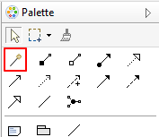
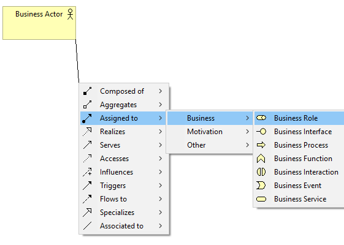
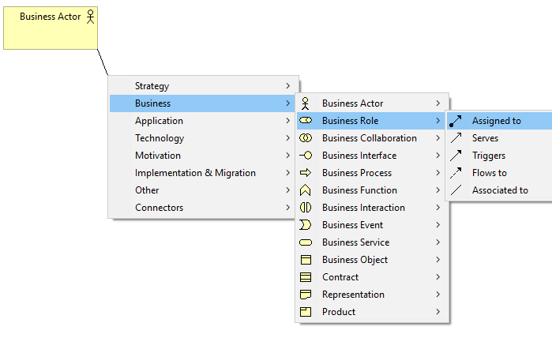

将视图中的一个元素连接到另一个元素取决于根据 ArchiMate 规范是否允许这种关系。例如，您不能将应用组件的分配关系连接到业务施动者。除非您非常熟悉 ArchiMate 中管理关系的规则，否则很难找到一个元素和另一个元素之间允许的关系。 “魔术连接”解决了这个问题。
调色板中的魔术连接
魔术连接有两个用途 - 首先是在一个元素和另一个元素之间创建一个新的允许连接，其次是在源元素和新创建的元素之间创建一个新元素和一个允许的连接。
要使用魔术连接在源元素和目标元素之间创建连接，请执行以下步骤：
使用魔术连接器绘制连接
要使用魔术连接在一次操作中创建新元素和连接，请执行以下步骤：
在以下示例中，将创建一个新的业务角色元素以及一个连接到原始选定业务参与者元素的新分配关系。
使用 Magic Connector 创建新元素和连接
如果您在按住 Ctrl 键（或 Mac 上的 Command 键）的同时单击画布的空白区域，则元素将首先显示，然后是弹出菜单中的连接（此可以在 首选项) 中反转行为：
在按住 Ctrl / Command 键的同时使用魔术连接创建新元素和连接